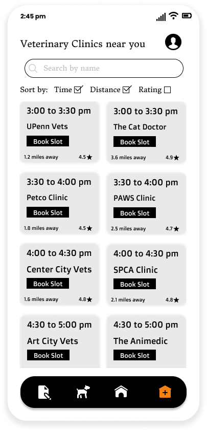
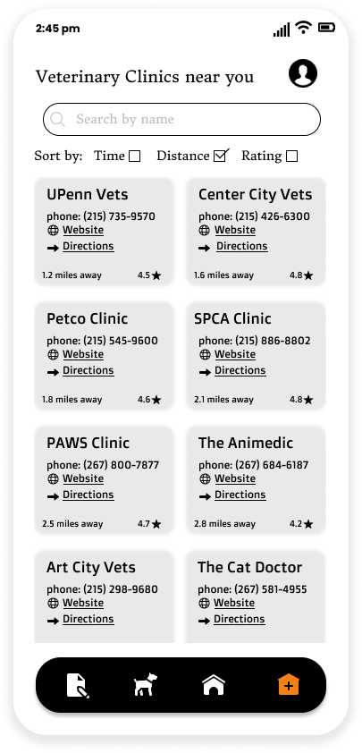

Centralized Animal Rescue hosts information about Veterinary Clinics in the user's neighborhood. Users can look up individual clinic information or book appointments by comparing available slots in many clinics.
Users can book appointments in Veterinary clinics based on different sort parameters. The Time and Distance parameters brings up results based on the next available appointment and nearest clincs. The Time and Rating parameter brings up results based on the next available appointment and rating.

Users also have the option of sorting by Rating and Distance, which will bring up more information about each clinic.
